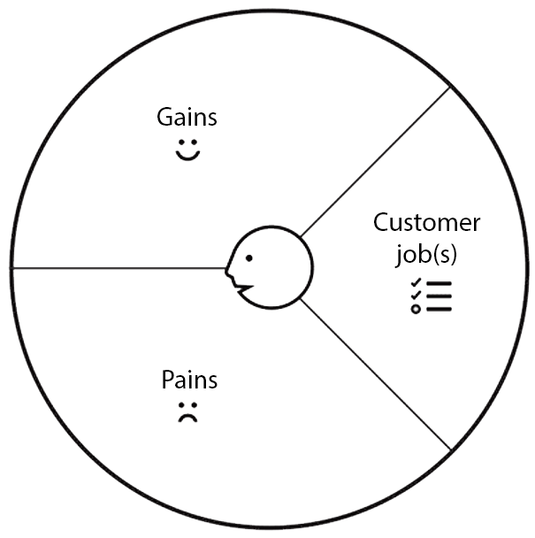

Value proposition canvas
Denne forretningsmodel bygger på business model canvas og er baseret på to af elementerne fra den.
De to elementer
Kundesegmentet, hvem der ønskes at skabe værdi for.
Value propostions, hvordan skal der tiltrækkes kunder.
I denne model uddybes de to elementer og viser sammenhængen imellem hvad virksomheden tilbyder og hvad kunderne ønsker i form af et værdikort.
Værdikort
Værdikortet er delt op i tre segmenter:

Kundeprofil
Hvile jobs eller opgaver ønsker kunden at få løst, hvilke pains eller irritationer er kunden villig til at finde sig i, for at opgaven bliver løst og hvilke gains eller gevinster får kunden ud af en løst opgave.
Kundeopgaver
De opgaver kunde forsøger at få løst.
Der findes tre overordnede typer af kundeopgaver der skal udføres.

Pains
Kundegevinster
Rangordning
Det er nødvendigt at rangere sine pains og gains, for at kunne udforme et værdikort, der passer til ens kunder. Det kan være svært at finde de eksakte værdier der skal rangeres højest i starten, dette er en færdighed som forbedres jo mere kundeinteraktion virksomheden erfarer over tid.